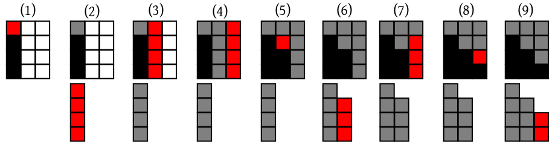
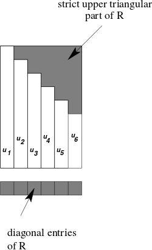

| Last updated on: TUE MAY 04 IST 2021 |
EXAMPLE:
Consider the following three equations:
$$\begin{eqnarray*}
2x-3y+z& =& 5\\
3x+y+2z& =& 15\\
2x + 3z& =& -2
\end{eqnarray*}$$
This is an example of a system of linear equations.
EXAMPLE:
The system in the last example can be written as
$$
\left[\begin{array}{ccccccccccc}2& -3& 1\\3& 1& 2\\2& 0& 3
\end{array}\right] \left[\begin{array}{ccccccccccc}x\\y\\z
\end{array}\right] = \left[\begin{array}{ccccccccccc}5\\15\\-2
\end{array}\right].
$$
Thus, here
$$
A = \left[\begin{array}{ccccccccccc}2& -3& 1\\3& 1& 2\\2& 0& 3
\end{array}\right],~~~\bx = \left[\begin{array}{ccccccccccc}x\\y\\z
\end{array}\right],~~~
\bb = \left[\begin{array}{ccccccccccc}5\\15\\-2
\end{array}\right].
$$
EXAMPLE: Consider the following system of three linear equations, which we call $\alpha_1,\beta_1$ and $\gamma_1.$ $$\begin{array}{lrrrrrrrrrrrr} \alpha_1 :~~~& x& -y& +z& =& 2 \\ \beta_1 :~~~& 2x& +5y& -z& =& 9 \\ \gamma_1 :~~~& x& +2y& -3z& =& -4 \end{array}$$ In high school we used to solve this by eliminating the unknowns one by one until only one remained. Here we shall do this for all the unknowns simultaneously. Let us first eliminate $x$ from the last two equations by subtracting multiples of the first equation from them. Here are the resulting 3 equations, which we call $\alpha_2,\beta_2$ and $\gamma_2.$ $$\begin{array}{lrrrrrrrrrrrr} \alpha_2=& \alpha_1 :~~~& x& -y& +z& =& 2 \\ \beta_2=& \beta_1-2\alpha_1 :~~~& & 7y& -3z& =& 5 \\ \gamma_2=& \gamma_1-\alpha_1 :~~~& & 3y& -4z& =& -6 \end{array}$$ We want the coefficient of $y$ in the second equation to be $1:$ $$\begin{array}{lrrrrrrrrrrrr} \alpha_3=& \alpha_2 :~~~& x& -y & +z& =& 2 \\ \beta_3=& \frac 17\beta_2 :~~~& & y& -\frac 37z& =& \frac 57 \\ \gamma_3=& \gamma_2 :~~~& & 3y & -4z& =& -6 \end{array}$$ Now let us eliminate $y$ from the all the equations except the second one: $$\begin{array}{lrrrrrrrrrrrr} \alpha_4=& \alpha_3+\beta_2 :~~~& x& & +\frac 47z& =& \frac{19}{7} \\ \beta_4=& \beta_3 :~~~& & y& -\frac 37z& =& \frac 57 \\ \gamma_4=& \gamma_3-3\beta_2 :~~~& & & -\frac{19}{7}z& =& -\frac{57}{7} \end{array}$$ Next, we want the coefficient of $z$ in the third equation to be $1:$ $$\begin{array}{lrrrrrrrrrrrr} \alpha_5=& \alpha_4 :~~~& x& & +\frac 47z& =& \frac{19}{7} \\ \beta_5=& \beta_4 :~~~& & y& -\frac 37z& =& \frac 57 \\ \gamma_5=& -\frac{7}{19}\gamma_4 :~~~& & & z& =& 3 \end{array}$$ Finally, eliminate $z$ from all but the last equation: $$\begin{array}{lrrrrrrrrrrrr} \alpha_6=& \alpha_5-\frac 74\gamma_5 :~~~& x& & & =& 1 \\ \beta_6=& \beta_5+\frac 73 \gamma_5 :~~~& & y& & =& 2 \\ \gamma_6=& \gamma_5 :~~~& & & z& =& 3 \end{array}$$ This gives us the final solution.
This is what is called Gauss-Jordan elimination
in computational matrix theory. While doing
Gauss-Jordan elimination it is customary to write the system at each step in
the augmented matrix form. This is done in the example below.
EXAMPLE: The augmented matrix form of the given system is as follows. $$\left[\begin{array}{rrr|r} 1& -1& 1& 2 \\ 2& 5& -1& 9 \\ 1& 2& -3& -4 \end{array}\right]$$ It is obtained by appending the rhs after the matrix. We draw a vertical line to keep the rhs separate.
Here is a sequence of augmented matrices that we encountered during the process: $$ \left[\begin{array}{rrr|r} \fbox1 & -1 & 1 & 2\\ 2 & 5 & -1 & 7\\ 1 & 2 & -3 & -4 \end{array}\right] \stackrel{SP}{\longrightarrow} \left[\begin{array}{rrr|r} 1 & -1 & 1 & 2\\ 0 & \fbox7 & -3 & 5\\ 0 & 3 & -4 & -6 \end{array}\right] \stackrel{M}{\longrightarrow} \left[\begin{array}{rrr|r} 1 & -1 & 1 & 2\\ 0 & \fbox1 & -\frac 37 & \frac 57\\ 0 & 3 & -4 & -6 \end{array}\right] \stackrel{SP}{\longrightarrow} \left[\begin{array}{rrr|r} 1 & 0 & \frac 47 & 2\\ 0 & 1 & -\frac 37 & \frac 57\\ 0 & 0 & \fbox{$-\frac{19}{7}$} & -\frac{57}{7} \end{array}\right] \stackrel{M}{\longrightarrow} \left[\begin{array}{rrr|r} 1 & 0 & \frac 47 & 2\\ 0 & 1 & -\frac 37 & \frac 57\\ 0 & 0 & \fbox1 & 3 \end{array}\right] \stackrel{SP}{\longrightarrow} \left[\begin{array}{rrr|r} 1 & 0 & 0 & 1\\ 0 & 1 & 0 & 2\\ 0 & 0 & 1 & 3 \end{array}\right] $$ Here we have used 3 symbols $S$, $M$ and $P$. Let us understand them. Before each step we choose an entry in the lhs of the augmented matrix (framed inside rectangles above). This is called the pivot, and its row and column are called the pivotal row and pivotal column. Initially the top left hand entry is chosen as the pivot.
If the current position of the pivot is $(p,p)$, then the
following R code achieves the steps:
M = function() {mat[p,] <<- mat[p,]/mat[p,p]; print(mat)}
S = function(i) { mat[i,] <<- mat[i,] - mat[p,]*mat[i,p]; print(mat)}
P = function() { p <<- p + 1; print(p) }
Here we have used the less known <<-
operator. If x is a variable defined outside a
function, and you write x = 5 inside the function,
then this assignment has no effect outside the function:
x = 3
f = function() {x = 5}
f()
x
Try these to see that x is still 3. However, if you
use the <<- operator, then the assignment is
visible outside the function:
x = 3
f = function() {x <<- 5}
f()
x
Now x is 5.
To try these out let us create a random system:
A = matrix(sample(100, 16, rep=TRUE),4,4) b = sample(100, 4, rep=T)The
sample function draws an SRSWOR or SRSWR. The
first argument specifies the population, the second is the sample
size. The rep argument specifies whether replacement
is allowed.
Let's make the augmented matrix:
mat = cbind(A,b) p = 1Now let's apply our steps:
M() S(2) S(3) S(4)That finishes the first pass. The second pass starts by updating the pivot:
P() M() S(1) S(3) S(4)
EXAMPLE: If the system is $$\begin{array}{lrrrrrrrrrrrr} & 3 y & - 5z & = & -1\\ 4x & + y & + z & = & 6\\ -x & - 8y & - z & = & -4 \end{array}$$ then the $(1,1)$-th entry is 0.
Yet it is hardly a problem, because we just have to use some other equation to eliminate $x$ with. For this we may choose just any equation that has $x$ in it (i.e., the coefficient of $x$ is nonzero). For example, we may choose the $3$rd equation: equations to rewrite the system as $$\begin{array}{lrrrrrrrrrrrr} & 3 y & - 5z & = & -1\\ 4x & + y & + z & = & 6\\ \fbox{$-x$} & - 8y & - z & = & -4 \end{array}$$ Or we could have eliminated some other variable instead of $x$ using the first equation: $$\begin{array}{lrrrrrrrrrrrr} & \fbox{$3 y$} & - 5z & = & -1\\ 4x & + y & + z & = & 6\\ -x & - 8y & - z & = & -4 \end{array}$$
These are called pivoting.
It is useful
even when the pivot is nonzero, but is very small in absolute value.
This is because
division by numbers near zero in a computer introduces large errors in the output.
In terms of augmented matrices, pivoting means choosing the pivot
position appropriately at the start of each step. There are just
two rules to keep in mind:
P
function.
P = function() {
p <<- p + 1
n = nrow(mat)
candidates = mat[p:n,p:n]
argmax = which.max(abs(candidates))
#cat('argmax=',argmax)
newRow = p + (argmax-1) %% nrow(candidates)
newCol = p + floor((argmax-1) / nrow(candidates))
cat('Best candidate at', newRow, newCol,'\n')
# Now we shall swap the rows p and newRow.
tmp = mat[newRow,]
mat[newRow,] <<- mat[p,]
mat[p,] <<- tmp
# We also need to swap the row heads accordingly.
# First we extract the current row heads.
rheads = rownames(mat)
# Next we perform the swap.
tmp = rheads[newRow]
rheads[newRow] = rheads[p]
rheads[p] = tmp
# Finally we assign the swapped array of row heads to the matrix.
rownames(mat) <<- rheads
# Similarly, for the column swap.
tmp = mat[,newCol]
mat[,newCol] <<- mat[,p]
mat[,p] <<- tmp
cheads = colnames(mat)
tmp = cheads[newCol]
cheads[newCol] = cheads[p]
cheads[p] = tmp
colnames(mat) <<- cheads
print(mat)
}
Of course, we need to keep track of our swaps. For this we shall
employ the ability of R to attach names to each row and column:
rownames(A) = 1:4
colnames(A) = paste('x',1:4,sep='')
A
Now proceed as before:
( mat = cbind(A, b) ) p = 0Notice we are starting with pivot position 0. The only differecen is that we start with a pivoting step.
P() M() S(2) S(3) S(4)The next pass is similar:
P() M() S(1) S(3) S(4)Here you end up with
0 0 1 | 0.371951 1 0 0 | 1.33537 0 1 0 | 0.286585The left hand side is a permuation matrix, which tells us how to interpret the right hand side: $z = 0.371951$, $x = 1.33537$ and $y = 0.286585$.
EXAMPLE:
Suppose that we want to find the inverse of the matrix
$\left[\begin{array}{ccccccccccc}1& -1& 1 \\
2& 5& -1 \\
1& 2& -3
\end{array}\right].$
Then we append an identity matrix of the same size to the right of this
matrix to get the
augmented matrix
$$\left[\begin{array}{rrr|rrr}
1& -1& 1& 1 & 0 & 0\\
2& 5& -1& 0 & 1& 0\\
1& 2& -3& 0& 0& 1
\end{array}\right].$$
Now go on applying Gauss-Jordan elimination until the
left hand matrix is reduced to a permuation matrix. The right hand part at the final step
will give the required inverse (after the permutation).
$$
\left[\begin{array}{rrr|rrr}
\fbox1& -1& 1& 1 & 0 & 0\\
2& 5& -1& 0 & 1& 0\\
1& 2& -3& 0& 0& 1
\end{array}\right]
\stackrel{M,S,P}{\longrightarrow}
\left[\begin{array}{rrr|rrr}
1& -1& 1& 1& 0& 0 \\
0& \fbox7 & -3& -2& 1& 0 \\
0& 3 & -4& -1& 0& 1
\end{array}\right]
\stackrel{M,S,P}{\longrightarrow}
\left[\begin{array}{rrr|rrr}
1& 0& \frac{4}{7}& \frac{5}{7}& \frac{1}{7}& 0 \\
0& 1& \frac{-3}{7}& \frac{-2}{7}& \frac{1}{7}& 0 \\
0& 0 & \fbox{$\frac{-19}{7}$}& \frac{-1}{7}& \frac{-3}{7}& 1
\end{array}\right]
\stackrel{M,S,P}{\longrightarrow}
\left[\begin{array}{rrr|rrr}
1& 0& 0& \frac{91}{133}& \frac{7}{133}& \frac{4}{19} \\
0& 1& 0& \frac{-35}{133}& \frac{28}{133}& \frac{-3}{19} \\
0& 0& 1& \frac{1}{19}& \frac{3}{19}& \frac{-7}{19}
\end{array}\right]$$
Thus, the required inverse is
$$\left[\begin{array}{ccccccccccc} \frac{91}{133}& \frac{7}{133}& \frac{4}{19}
\\\frac{-35}{133}& \frac{28}{133}& \frac{-3}{19}
\\\frac{1}{19}& \frac{3}{19}& \frac{-7}{19}
\end{array}\right].$$
EXERCISE: Find out how one may use the Gauss-Jordan
elimination algorithm to compute the determinant.
PROJECT:
Write a program that will apply Gauss-Jordan elimination to an arbitrary matrix of order
$m\times n$ over ${\mathbb R}.$ It should perform
the row swaps only when the pivot is zero. The resulting form is called the reduced row echelon
form (RREF) of the matrix. This form has the interesting property
that any two matrices with the same size and same row space must
have the same RREF. The program should also find bases of the
column space, row space and null space of the matrix using the
computed RREF.
If $x\neq y$ are two vectors of same length, then does there exist an orthogonal $A$ that takes $x$ to $y$ and vice versa? That is, we are looking for an orthogonal $A$ (possibly depending on $x,y$) such that $$ Ax = y \mbox{ and } Ay=x? $$The answer is ''Yes.'' In fact, there may be many. Householder's transform is one such: $$ A = I-2uu', \mbox{ where } u = unit(x-y). $$
EXERCISE:
Show that this $A$ is orthogonal and it sends $x$ to $y$
and vice versa.
EXAMPLE: In general you need $n^2$ scalar multiplications to multiply an $n\times n$ matrix with an $n\times 1$ vector. However, show that if the matrix is a Householder matrix then only $2n+1$ scalar multiplications are needed.
SOLUTION: $$ A\bv = (I-2\bu\bu')\bv = \bv-2\bu\bu'\bv. $$ Now $\bu'\bv$ is a scalar that requires $n$ multiplications to compute. Multiply that with $2$ (one more multiplication) to get the scalar $2\bu'\bv = \lambda,$ say. Finally, multiply each entry of $\bu$ with $\lambda $ (requiring $n$ more multiplications).
Let's play with the idea using R:
unit = function(v) {v/sqrt(sum(v*v))}
hmult = function(u, x) {x - 2* sum(u*x)*u}
( x = unit(c(1,2,3)) )
( y = unit(c(4,2,5)) )
( u = unit(x-y) )
hmult(u,x)
EXERCISE:
Show that in 2 dimensions Householder's transform is the only such
transform. Show that this uniqueness does not hold for higher dimensions.
EXERCISE:
Let us partition a vector $\bu$ as
$$
\bu_{n\times 1} = \left[\begin{array}{ccccccccccc}\bu_1\\\bu_2
\end{array}\right],
$$
where both $\bu_1,\bu_2$ are vectors ($\bu_2$ being
$k\times 1).$ Consider the $n\times n$
matrix
$$
H = \left[\begin{array}{ccccccccccc}I & 0\\0 & H_{\bu_2}
\end{array}\right].
$$
Show that $H$ is orthogonal and compute $Hu.$ We shall say that
$H$ shaves the last $k-1$ elements of $u.$
EXERCISE:
Carry this out for the following $5\times 4$ case.
$$
\left[\begin{array}{ccccccccccc}
1& 2 & 3 & 4\\
1& 3 & 2 & 4\\
1& -2 & 5 & 0\\
7& 2 & 1 & 3\\
-2& 8 & 5 & 4
\end{array}\right]
$$
|  |
|---|
| Steps in the computation of $R$ and the $\bu$'s |
shaver = function(x) {
x[1] = x[1] - sqrt(sum(x*x))
unit(x)
}
Next, let's create a matrix:
H1 = sample(1000, 6) H2 = sample(1000, 6) H3 = sample(1000, 6) H4 = sample(1000, 6) H5 = sample(1000, 6)OK, ready for first pass:
(u=shaver(H1)) (H1 = hmult(u,H1)) #Just for checking! (H2 = hmult(u,H2)) (H3 = hmult(u,H3)) (H4 = hmult(u,H4)) (H5 = hmult(u,H5))The second pass is similar:
(u=shaver(H2[2:6])) (H2[2:6] = hmult(u,H2[2:6])) (H3[2:6] = hmult(u,H3[2:6])) (H4[2:6] = hmult(u,H4[2:6])) (H5[2:6] = hmult(u,H5[2:6]))and so on.
|  |
|---|
| Output of efficient $QR$ decomposition |
EXERCISE:
Write a program that performs the above multiplication without explicitly
computing $Q.$
EXERCISE:
Show that $x=R_1^{-1}\bc_1$ is the least square solution of the original
system. Notice that you use back-substituting to find this $\bx$ and not
direct inversion of $R_1.$
EXERCISE:
Find a use of $\bc_2$ to compute the residual sum of squares:
$$
\|\bb-A\bx\|^2.
$$
PROJECT:
Write a program to find a least squares solution to the
system $A\bx=\bb$. Your program should first implement the above efficient version of $QR$
decomposition of $A.$ Your program
should be able to detect if $A$ is not full column rank,
in which case it should stop with an error message. If $A$
is full column rank, then the program should output the unique
least squares solution. Your program must never compute any
Householder matrix explicitly.
If $A$ is not full column rank, then for some $k$, the $k$-th column of $A$ will be in the span of the preceding columns. At that point, the norm of $\bu$ will be zero.There are two things you can do if you detect such a situation.
EXAMPLE: Let's take $$ A=\left[\begin{array}{ccccccccccc}3 & 6 & 1\\4 & 8 & 3\\0&0&4 \end{array}\right]. $$ Clearly, $r(A) = 2.$ The first step of the $QR$ algorithm will go smoothly, converting $A$ to $$ \left[\begin{array}{ccccccccccc} 5 & 10 & *\\ 0 & 0 & *\\ 0 & 0 & * \end{array}\right]. $$ In the second step we run into trouble. We are supposed to "shave" the two entries under the 10. But they are already zeroes. So the first approach will simply move on to the third step, and finally produce a $3\times 3$ upper triangular $R.$ This $R$ will not help you much to get any least squares solution of a system $A\bx = \bb.$
In the second approach, we shall throw away the second column to get: $$ \left[\begin{array}{ccccccccccc} 5 & *\\ 0 & *\\ 0 & * \end{array}\right]. $$ Then it will proceed to perform the second step again on this new matrix, i.e., the lowest $*$ will get shaved. The output of this version of the $QR$ algorithm is an $R$ matrix of size $3\times 2$. The top $2\times 2$ portion is a nonsingular upper triangular matrix, which will allow you to compute a least squares solution.
Proof: Here $$ A^k \bv = \sum_i c_i \lambda_i^k \bv_i = \lambda_1^k \left(c_1 \bv_1 + \sum_{i=2}^n c_i \left(\tfrac{\lambda_i}{\lambda_1}\right)^k \bv_i\right). $$ So $$ unit(A^k \bv) = unit\left(c_1 \bv_1 + \sum_{i=2}^n c_i \left(\tfrac{\lambda_i}{\lambda_1}\right)^k \bv_i\right). $$ Now, if $(\bx_n)$ is a sequence of vectors with $\bx_n\rightarrow \bx\neq \bz,$ then $unit(\bx_n)\rightarrow unit(\bx).$
Hence $unit(A^k\bv) \rightarrow unit(c_1 \bv_1) = unit(\bv_1)$ if $c_1 >0$ and $-unit(\bv)$ is $ c_1 <0,$ as required. [QED] Let's take a computational example:A = matrix(runif(9),3,3) (u = unit(1:3)) (u= unit(A%*% u))Just keep on running the last line repeatedly.